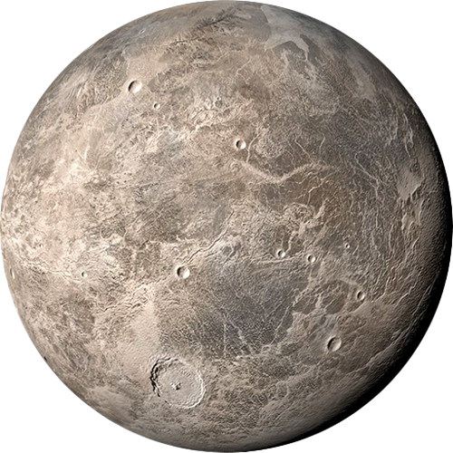
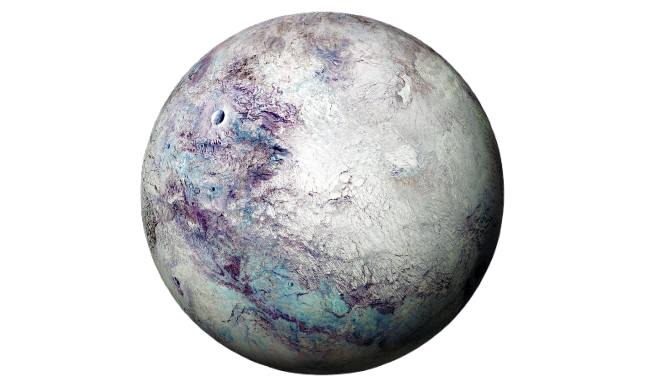
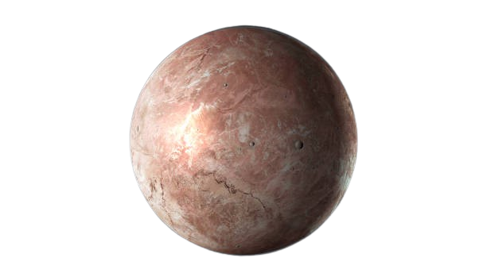
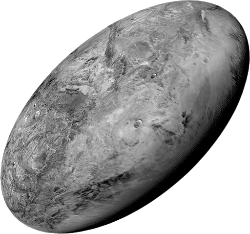
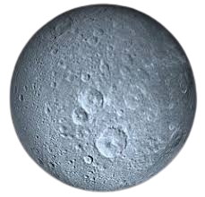

Pluto
Pluto (minor-planet designation: 134340 Pluto) is a dwarf planet in the Kuiper belt, a ring of bodies beyond the orbit of Neptune. It is the ninth-largest and tenth-most-massive known object to directly orbit the Sun. It is the largest known trans-Neptunian object by volume by a small margin, but is less massive than Eris.

Ceres
Ceres (minor-planet designation: 1 Ceres) is a dwarf planet in the main asteroid belt between the orbits of Mars and Jupiter. It was the first known asteroid, discovered on 1 January 1801 by Giuseppe Piazzi at Palermo Astronomical Observatory in Sicily, and announced as a new planet. Ceres was later classified as an asteroid and more recently as a dwarf planet.

Eris
Eris (minor-planet designation: 136199 Eris) is the most massive and second-largest known dwarf planet in the Solar System.It is a trans-Neptunian object (TNO) in the scattered disk and has a high-eccentricity orbit. It was named in September 2006 after the Greco-Roman goddess of strife and discord. Eris is the ninth-most massive known object orbiting the Sun and the sixteenth-most massive in the Solar System (counting moons).

Makemake
Makemake resides in the Kuiper Belt and is the third-largest known dwarf planet. Its bright, icy surface gives it a reddish appearance.Makemake (minor-planet designation: 136472 Makemake) is a dwarf planet in the Kuiper belt, a disk of icy bodies beyond the orbit of Neptune. It is the fourth largest trans-Neptunian object and the largest member of the classical Kuiper belt,[h] having a diameter 60% that of Pluto.

Haumea
Haumea (minor-planet designation: 136108 Haumea) is a dwarf planet located beyond Neptune's orbit It was discovered in 2004 by a team headed by Mike Brown of Caltech at the Palomar Observatory, and formally announced in 2005 by a team headed by José Luis Ortiz Moreno at the Sierra Nevada Observatory in Spain, who had discovered it that year in precovery images taken by the team in 2003. From that announcement, it received the provisional designation 2003 EL61.

Orcus
Orcus (minor-planet designation: 90482 Orcus) is a dwarf planet located in the Kuiper belt, with one large moon, Vanth. It has an estimated diameter of 870 to 960 km (540 to 600 mi), comparable to the Inner Solar System dwarf planet Ceres. The surface of Orcus is relatively bright with albedo reaching 23 percent, neutral in color, and rich in water ice. The ice is predominantly in crystalline form, which may be related to past cryovolcanic activity.